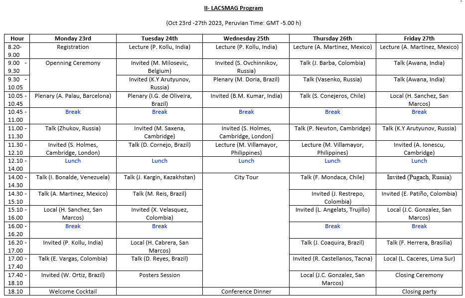

PROGRAM

.
Oct 23rd 2023 (Monday)
8.20 – 9.00 h: Registration
9.00 – 10.05 h: Openning ceremony
Moderator: J.C. Gonzalez
10.05 – 10.45 h: Plenary talk “Nanoengineered High-Temperature Superconductors for Efficient Functional Devices”, Anna Palau, Institut de Ciència de Materials de Barcelona, Spain.
10.45 – 11.00 h: Break
Moderator: L. De Los Santos
11.00- 11.30 h: Talk “Impact of Thermomagnetic Treatment on Magnetic Properties of Nanocrystalline Fe-O and Fe-Co-O Pressed Compacts”, D.G. Zhukov, National University of Science and Technology (MISIS), Moscow, Russia.
11.30 – 12.10 h: Invited speaker “Topological properties of low temperature MBE growth α – Sn”, Stuart N. Holmes, University College London, United Kingdom.
12.10 – 14.00 h: Lunch
Moderator: Eliana Vargas
14.00 – 14.30 h: Talk “On the spin-filtering property of DNA-type helical molecules: a magnetic susceptibility analysis”, Ismardo Bonalde, Instituto Venezolano de Investigaciones Cienticas, Venezuela.
14.30 – 15.10 h: Talk “Zinc Ferrite Nanoparticles as Potential Photocatalysts for Methylene Blue and Methyl Orange Degradation” Arturo I. Mtz-Enriquez, Centro de Investigación y de Estudios Avanzados del IPN Unidad Saltillo, Mexico.
15.10 – 16.0 h: Local speaker “DC and AC magnetic susceptibility in Ni/YBCO/LaAlO3 thin films”, H. Sanchez Cornejo, Universidad Nacional Mayor de San Marcos, Perú.
16.00 – 16.20 h: Break
Moderator: Ximena Velasquez
16.20 – 17.00 h: Talk “Tin Antimony Alloy based Reduced Graphene Oxide for Fast Charging Sodium-ion Batteries”, Pratap Kollu, University of Hyderabad, India.
17.00 – 17.40 h: Talk “Observation of granular Josephson mechanism ad the vortex-glass transition in the polycrystalline GdBa2Cu3O7-δsuperconductor”, E. M. Vargas-Pineda, Universidad Nacional de Colombia, Colombia.
17.40 – 18.10 h: Talk “Managing magnetic flux penetration in superconducting films: strategies to enhance the critical current”, Wilson A. Ortiz, Universidade Federal de São Carlos, Brazil.
18.10 h: Welcome cocktail.
Oct 24th 2023 (Tuesday)
Moderator: Mauro Doria
8.20 – 9.00 h: Lecture “Materials characterization techniques: Overview (Part 1)”, Pratap Kollu, University of Hyderabad, India.
9.00 – 9.30 h: Invited speaker “Superconductivity and magnetism in two-dimensional materials and van der Waals heterostructures”, Milorad V. Milosevic, University of Antwerp, Belgium.
9.30 – 10.05 h: Invited speaker “Fundamental limitations and perspectives of development of nanoelectronics”, Konstantin Yu. Arutyunov, National Research University Higher School of Economics, Russia.
10.05 – 10.45 h: Plenary “The spike state found in genuine type-I superconductors”, Isaias G. de Oliveira, Rural Federal University of Rio de Janeiro, Brazil”.
10.45 – 11.00 h: Break
Moderator: Stuart Holmes
11.00- 11.30 h: Invited speaker “Evolution of Structural, Magnetic and Electronic Properties with Pressure in TMPX3 van-der-Waals Compounds”, M. Saxena, University of Cambridge, UK
11.30 – 12.10 h: Talk “Magnetization-dependent capacitance in a supercapacitor based on nanoporous alumina with Ni electrodeposited nanowires”, Daniel R. Cornejo, Sao Paulo University, Brazil.
12.10 – 14.00 h: Lunch
Moderator: Henry Sanchez
14.00 – 14.30 h: Talk “Influence of iron-concentration on diffusion parameters of oxygen in YBa2Cu3-yFeyOx”, J.Kargin, L.N.Gumilyov Eurasian National University, Kazakhstan.
14.30 – 15.10 h: Talk “Spin crossover transition driven by pressure: Barocaloric applications”, Mario Reis, Fluminense Federal University, Brazil.
15.10 – 16.00 h: Invited speaker “Crystalline, magnetical and optical properties of the LaCaFeSnO6 perovskite”, X. A. Velásquez Moya, Universidad Nacional de Colombia, Colombia
16.00 – 16.20 h: Break
Moderator: Sergio Conejeros
16.20 – 17.00 h: Local speaker “Electron transport properties of iron oxide nanowire-based spin filters: A DFT study”, H. Cabrera-Tinoco, Universidad Nacional Mayor de San Marcos, Peru.
17.00 – 17.40 h: Talk “Interplay between charge density wave and superconductivity in multiband systems”, D. Reyes Lopez, Instituto Militar de Engenharia, Brazil.
17.40 – 19.00 h: (Posters session)
P01- “Fabrication and characterization of high-temperature superconducting tapes ”, D.A Orna Tiburcio, Universidad Nacional Mayor de San Marcos, Peru.
P02- “Aging and environmental effects on the superconductor with ”, A. Bustamante Dominguez, Universidad Nacional Mayor de San Marcos, Peru
P03- “Density Functional Theory for the study of the magnetic properties of Fe3O4 and CoFe2O4”, C. A. Portilla Liberato, Universidad Nacional de Trujillo, Peru.
P04- “Chemical solution deposition of YBa2Cu3O7 Films on SrTiO3 substrates”, J. Garcia Dulanto, Universidad Nacional Mayor de San Marcos, Peru
P05- “Fabrication and characterization of 55 cm2 -area superconducting YBa2Cu3O7-d plates by powder mechanical pressing”, M.J. Godoy Chepe, Universidad Nacional Mayor de San Marcos, Peru.
P06- “Magnetic and Mössbauer analysis of soil samples from a contaminated site in Huancavelica, Peru”, M.A. Castillo Corzo, Universidad Nacional de Barranca, Peru.
P07- “Magnetic and pinning energy anisotropy of a porous YBCO thin film”, J. Flores Santibanez, Universidad Nacional Mayor de San Marcos, Peru.
P08- “Kerr and Faraday effects for the Characterization of magnetic thin films”, S.R Celis Rojas, Universidad Nacional de Barranca, Peru.
P09- “Preparation and characterization of the CaLaBaCu3-x(BO3)xO7-δ system with 0.0 ≤ x ≤ 0.5”, R. Bellido Quispe, Universidad Nacional del Callao.
P10- “Vortex dynamics study of (Gd, Y)Ba2Cu3O7 superconductor tapes prepared by MOCVD”, H. Sanchez Cornejo, Universidad Nacional Mayor de San Marcos, Peru.
P11- “Impact of Fe-α and Fe3+ in heat treated and compacted pressed AST A615 and A36 steel samples made of slag from SIDERPERU steel plant, Chimbote Peru”, S.M Espinoza Suarez, Universidad Nacional Mayor de San Marcos, Peru.
P12- “Espectroscopia Mossbauer de57 Fe del meteorito Tuxtuac: Analisis y propriedades magnéticas”, M.L. Cerón Loayza, Universidad Nacional Mayor de San Marcos, Peru
P13- “Estudio estructural y magnético de aleaciones Heusler Co2FeSi(1−x)Alx con 0 ≤ x ≤ 1”, J. Medina Medina, Universidad Nacional Mayor de San Marcos, Peru.
P14- “Characterization of natural goethite nanoparticles found in the Peruvian Andes in Cajamarca, Peru”, R.A. Valencia-Bedregal, Universidad Nacional Mayor de San Marcos, Peru.
Oct 25th 2023 (Wednesday)
Moderator: Isaias Gonzaga de Oliveira
8.20 – 9.00 h: Lecture “Materials characterization techniques: Overview (Part 2)”, Pratap Kollu, University of Hyderabad, India.
9.00 – 9.30 h: Invited speaker “Effect of orthorhombic distortion on magnetic pairing with enhanced s*-wave component in overdoped HTSC cuprates”, Sergey Ovchinnikov, Kirensky Institute of Physics, Russia.
9.30 – 10.05 h: Plenary “The Origin of the Linear Dirac Spectrum and topology”, Mauro M. Doria, Universidade Federal do Rio de Janeiro, Brazil.
10.05 – 10.45 h: Invited “Sustainable Treatment Technology of Wastewater using Heterojunction Semiconductor Nanomaterials”, B. Kumar Mandal, Vellore Institute of Technology, India.
10.45 – 11.00 h: Break
Moderator: Pratap Kollu
11.00- 11.30 h: Talk “Transition to Many Body Localization in GeSn devices”, S. N. Holmes, University College London, UK.
11.30 – 12.10 h: Lecture “Plasma deposition of superconducting and magnetic thin films (Part 1): Magnet-Target Distance Effect on Low Vacuum Magnetron Sputtering”, M. Villamayor, Central Mindanao University, Philippines.
12.10 – 14.00 h: Lunch
14.00 – 18.30 h: City Tour
19.00 h: Conference dinner.
Oct 26th 2023 (Thursday)
Moderator: Felipe Mondaca
8.20 – 9.00 h: Lecture “Preparation of ferric nanostructures (Part 1): The thermal decomposition method, a useful method to manufacture spinel ferrites”, A.I Martinez Enriquez, CINVESTAV, Mexico.
9.00 – 9.30 h: Talk “Numerical analysis of the vortex matter in a real three-dimensional superconducting wedge”, J. Barba-Ortega, Universidad Nacional de Colombia, Colombia.
9.30 – 10.05 h: Talk “Superconducting diode effect in topological hybrid structures”, A.S. Vasenko, HSE University, Russia.
10.05 – 10.45 h: Talk “Electronic structure and magnetic properties of CuFeS2”, S. Conejeros, Universidad Católica del Norte, Chile
10.45 – 11.00 h: Break
Moderator: Ximena Velasquez
11.00- 11.30 h: Talk “Composite Element Barcodes as Portable Magnetic Memories”, P.J. Newton, University of Cambridge, UK.
11.30 – 12.10 h: Lecture “Plasma deposition of superconducting and magnetic thin films (Part 2): Low-vacuum magnetron sputtering of V, Nb, and Ta metals”, M. Villamayor, Central Mindanao University, Philippines.
12.10 – 14.00 h: Lunch
Moderator: Sergio Conejeros
14.00 – 14.30 h: Talk “DFT Calculations on Lanthanide-Doped SnO2 for Ferromagnetic Phase Studies”, Felipe Mondaca, Universidad San Sebastián, Chile.
14.30 – 15.10 h: Talk “Hyperthermia and Hysteretic Properties of Magnetite Nanoparticles in a Viscous Medium: Effect of Temperature and Orientation”, Johans Restrepo, University of Antioquia, Colombia.
15.10 – 16.00 h: Invited speaker “Development of ZnO-based thin films as diluted magnetic semiconductors”, L.M. Angelats-Silva, Universidad Privada Antenor Orrego, Peru.
16.00 – 16.20 h: Break
Moderator: Henry Sanchez
16.20 – 17.00 h: Talk “Surface properties and particle-particle interactions in oleic acid and oleic acid/essential oil coated Fe3O4 nanoparticles”, J.A.H. Coaquira, Universidade de Brasília, Brazil.
17.00 – 17.40 h: Invited speaker “Immobilization of recombinant beta-galactosidase from Bacillus stearothermophilus in hollow α-Fe2O3 microspheres for lactose hydrolysis in bovine milk”, Jorge Basadre Grohmann National University, Peru.
17.40 – 18.10 h: Local speaker “Fano profile in the YBCO phonon spectrum”, J.C. Gonzalez, Universidad Nacional Mayor de San Marcos, Peru.
Oct 27th 2023 (Friday)
Moderator: Mauro Doria
8.20 – 9.00 h: Lecture “Preparation of ferric nanostructures (Part 2): The multifunctional properties of iron oxide nanoparticles prepared in aqueous solution”, A.I Martinez Enriquez, CINVESTAV, Mexico.
9.00 – 9.30 h: Talk “Absence of superconductivity in LK-99 at ambient conditions”, VPS Awana, National Physical Laboratory (CSIR), India.
9.30 – 10.05 h: Talk “Superconducting materials with Topological Properties”, VPS Awana, National Physical Laboratory (CSIR), India.
10.05 – 10.45 h: Local speaker “Vortex dynamics study of a textured YBCO superconducting film on MgO substrate”, H. Sanchez Cornejo, Universidad Nacional Mayor de San Marcos, Peru.
10.45 – 11.00 h: Break
Moderator: I. Gonzaga de Oliveira.
11.00- 11.30 h: Invited speaker “Transport of non-equilibrium quasiparticles in a superconductor”, Konstantin Yu. Arutyunov, National Research University Higher School of Economics, Russia.
11.30 – 12.10 h: Invited speaker “Determining the Proximity Effect-Induced Magnetic Moment in Graphene by Polarized Neutron Reflectivity and X-ray Magnetic Circular Dichroism”, A. Ionescu, University of Cambridge, United Kingdom.
12.10 – 14.00 h: Lunch
Moderator: Felipe Mondaca
14.00 – 14.30 h: Invited speaker “Superconducting spin valves based on chiral magnets”, N.G. Pugach, National Research University Higher School of Economics, Russia.
14.30 – 15.10 h: Talk “Quantum devices at the nano scale”, E.J. Patiño, Universidad de los Andes, Colombia.
15.10 – 16.00 h: Local speaker “Nanostructured thin films of functional oxide for developing of electronic devices based on spintronic”, J.C. Gonzalez, Universidad Nacional Mayor de San Marcos, Peru.
16.00 – 16.20 h: Break
16.20 –17.00 h: Talk “Effect of the post-thermal annealing in vacuum atmosphere on the structural, electrical and optical properties of Cu2S thin film growth by DC magnetron sputtering aiming solar cell applications”, F. Herera Aragon, University of Brasilia, Brazil
17.00 – 17.40 h: Local speaker “Vortex states simulation in a type II superconducting square sample”, L. Caceres, Universidad Nacional Tecnologica de Lima Sur, Peru.
18.10 h: Closing Ceremony.
18.10: Closing Party.